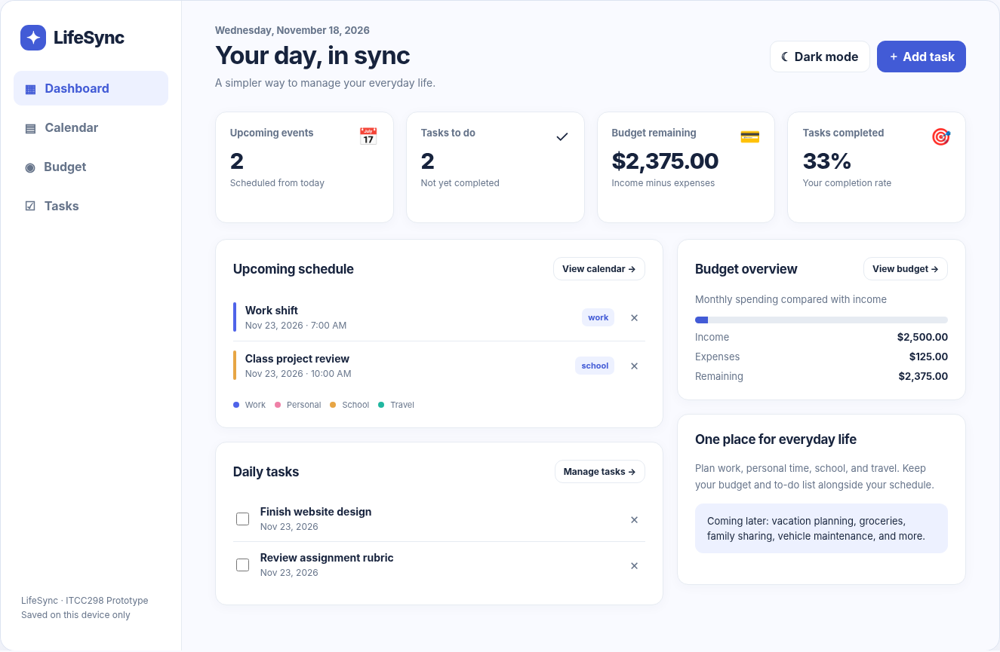
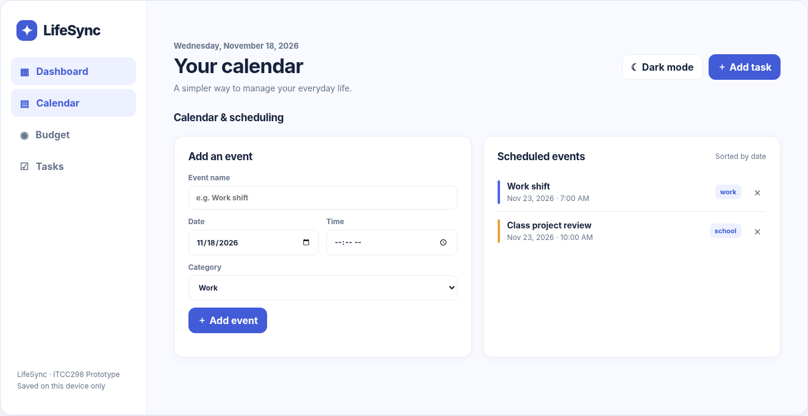
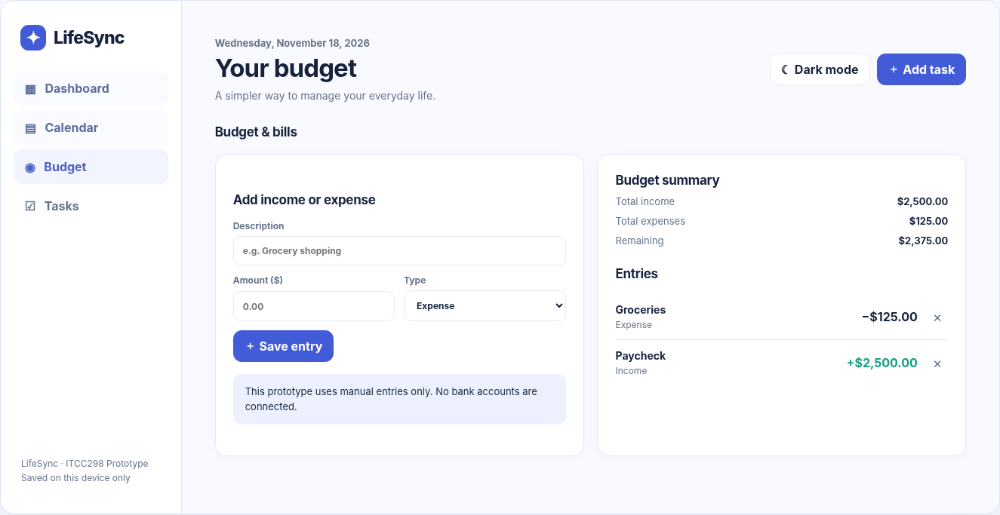
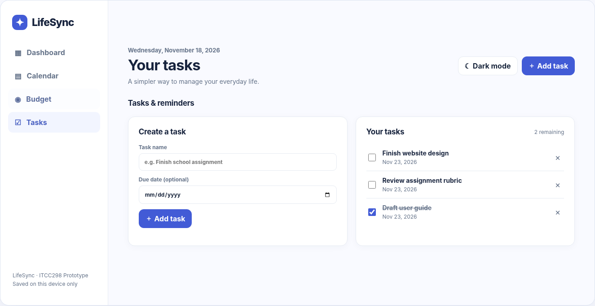

Getting started
is simple.
Follow these instructions to try the LifeSync dashboard, calendar, budget tracker, and task manager.
Open the applicationOpen LifeSync
Click the App Prototype link in the website navigation. The application opens in your browser—no installation or account is required.
- Open the App Prototype page.
- Use the application sidebar (or bottom navigation on mobile) to switch sections.
- Start with Dashboard to see your overview.
Check your dashboard
Dashboard shows upcoming events, tasks that still need attention, and a summary of your budget.

- Select Dashboard.
- Review the summary cards at the top.
- Use View calendar, View budget, or Manage tasks to open a section.
Add a calendar event
Use Calendar to organize work, personal, school, and travel events.

- Choose Calendar.
- Enter an event name, date, and time.
- Choose a category: Work, Personal, School, or Travel.
- Click Add event to save it.
- To remove an event, use the × button beside it.
Track income and expenses
The budget tracker lets you manually record money coming in and going out.

- Choose Budget.
- Type a description and dollar amount.
- Select Income or Expense.
- Click Save entry.
- Check your income, expenses, and remaining balance in the summary.
Manage daily tasks
Tasks help you keep track of what needs to get done.

- Choose Tasks.
- Enter a task name and, if needed, a due date.
- Click Add task.
- Check the box when the task is complete.
- Use the × button to delete an item.
Change the appearance & protect your information
Select Dark mode or Light mode at the top of the application to switch the display.
Entries are saved in your current browser using local storage. They do not sync across devices, and clearing your browser data may erase them. The budget does not connect to banks or process payments. Please use sample information rather than sensitive financial or personal details.